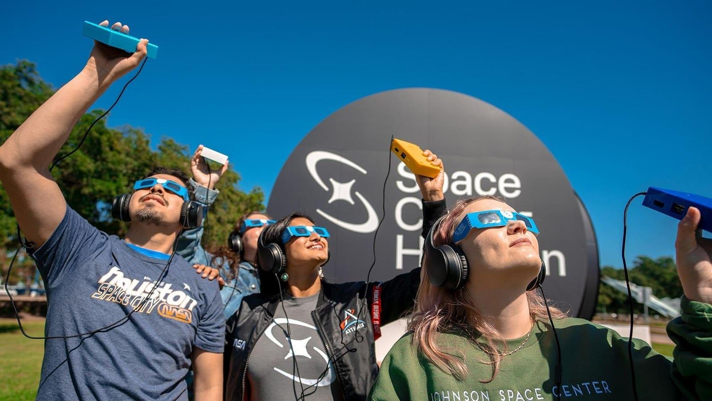

Meet The ‘Eclipse Ear’ That Will Turn Totality Into Tones On April 8For most eclipse-chasers now making plans to visit the 115-mile wide path of totality that will surge across North America on April 8, it’s all about a view of the sun’s corona. Oh, and the darkness—and don’t forget the Baily’s beads and the diamond ring. A total solar eclipse is a splendid thing to watch unfold, but it can seem like a non-starter for the visually impaired. After all, what’s the point if there’s nothing to see? Cue the LightSound Project, which revolves around a handheld device that converts light into sound, translating the eclipse’s dimming sunlight into changing musical tones. No bigger than a smartphone, it’s been designed and developed at Harvard University, and it’s hoped that over 750 of the gadgets will help blind and visually impaired people experience the total solar eclipse. Anyone can request one online. Sunlight Into Music Each LightSound box is equipped with a high dynamic range light sensor able to cope with both extremes—bright sunlight and the darkness of totality—which it then converts into sound. “The brightest sunlight we map to a flute sound, lower mid-range to a clarinet sound and for totality it’s a low clicking sound,” said Allyson Bieryla, an astronomer at Harvard University’s Center for Astrophysics, during a presentation at a meeting of the AAS Solar Eclipse Task Force in San Antonio, Texas in September last year. Crucially, there’s an audio output, which makes it possible to listen to an eclipse on a pair of headphones and also means it can be broadcast or streamed online. That’s precisely what Bieryla and her colleagues did during the 2017 eclipse, enabling students in South Africa to listen to totality from Jackson Hole, Wyoming. “You can have a unique experience on your own through headphones,” said Bieryla. “Or you can connect it to a speaker and have a shared experience with a group.” Unique Experience Bringing the wonder of the eclipse to blind and low-vision people has caught the imagination of community planners. “We’re creating a unique experience for our sight-impaired people, but instead of it just being you and your LightSound device, we want to make it a group experience,” said Trish Erzfeld, director at Perry County Heritage Tourism and chair of the Missouri Eclipse Task Force, in an interview. “We’re going to plug a LightSound into a PA sound system to create a unique listening area for sight-impaired people so they can experience the eclipse in real time with their friends and family.” The event—for which people should register for online by March 15—will take place between 10 a.m. and 3 p.m. on Monday, April 8 at Perryville Fire Station on North Perryville Boulevard, close to the town’s SolarFest. It’s also possible that a local radio station will broadcast the audio from LightSound. Perryville has seen all of this before. It is one of the few communities in the path of totality on April 8 that was also inside the path of totality during North America’s last total solar eclipse on August 21, 2017. “This time, we’re trying to be more inclusive to those in our community who have low vision or no vision, who often think the eclipse is not an event for them,” said Erzfeld. Solar Sonification Although LightSound is unique, it’s not the first attempt to make the eclipse more inclusive for blind and visually impaired people. At the 2017 eclipse, the San Francisco science museum Exploratorium created a real-time musical sonification and composition with a special performance by the Kronos Quartet. That continues to this day, with a live sonification performance live-streamed during the annular solar eclipse in October and also planned for April 8. Meanwhile, NASA is overseeing Eclipse Soundscapes, a citizen science program designed to include people who are blind and have low vision to study the multi-sensory experience of totality—such as how animals and insects are affected by solar eclipses. For the very latest on the total solar eclipse check my main feed for new articles each day. Wishing you clear skies and wide eyes. |
 |